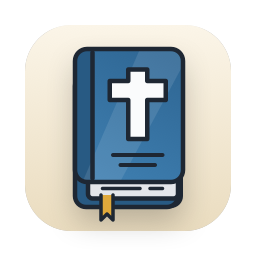
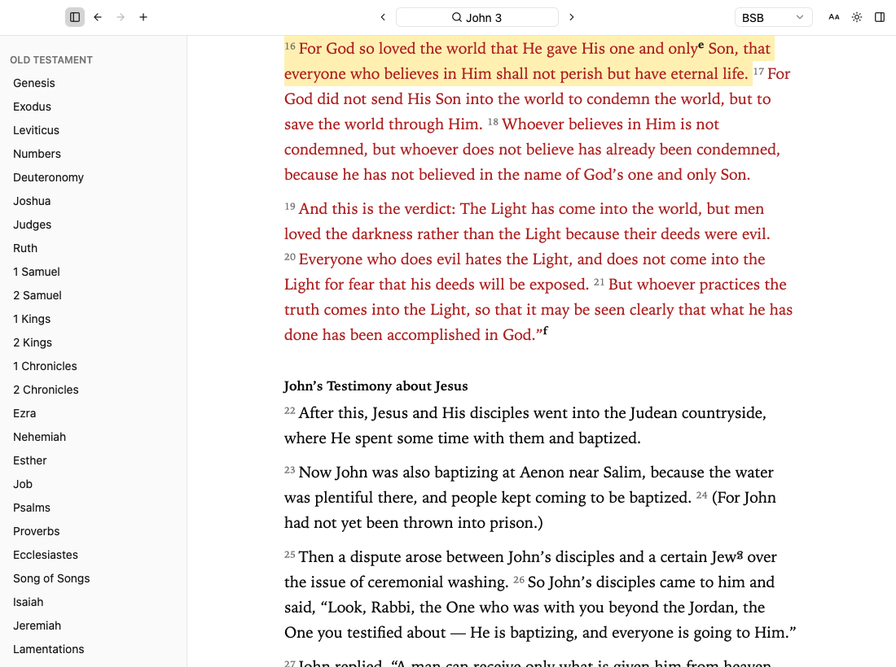
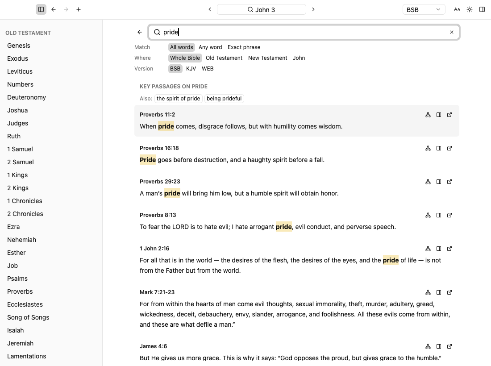
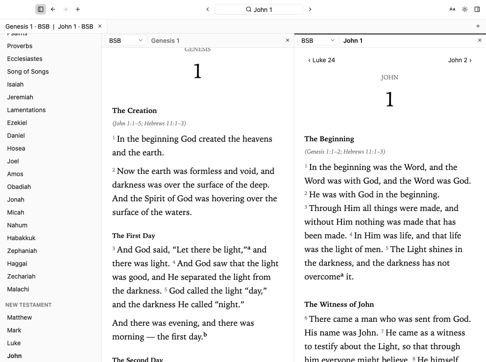

No browser overhead.
Rust and GPUI render the interface directly on the GPU. Smooth scrolling and quick chapter changes, without Electron.

Bible ReaderMade for Mac. Free & open source.
Built for macOS, not wrapped in a browser.
Jump to passages, search as you type, and read offline.
macOS 13+ Apple Silicon No account needed
GPU-rendered. Built with Rust & GPUI.
Listed on Zed’s Awesome GPUI
BUILT FOR SPEED
GPU-rendered text. Local SQLite data.
No Electron, web view, or account required.
Rust and GPUI render the interface directly on the GPU. Smooth scrolling and quick chapter changes, without Electron.
BSB, KJV, and WEB are included on your Mac. Chapters and search load from local SQLite files, with no network requests.
Highlight verses, add notes and tags, and come back to your saved passages. Export them as Markdown anytime.
Search words and topics locally. Press ⌘ K, type a reference like jn 3:16, and press Enter to jump straight there.

Open chapters or translations in separate tabs or split view. Each pane keeps its own place and navigation history.

OPTIONAL, NOT REQUIRED
Have a YouVersion developer app key? Add it in Settings to connect more translations, including the NIV where licensed. The three included Bibles stay offline, either way.
YouVersion setup & licensing notesOnline access, your own app key, and any required publisher licenses apply. No key or licensed text is included.
FREE & OPEN SOURCE
Free and open source. macOS 13+ · Apple Silicon.
Download the macOS arm64 ZIP from GitHub Releases, unzip it, and drag Bible Reader into Applications. This build isn’t notarized by Apple. If macOS blocks it, open System Settings → Privacy & Security → Open Anyway. Only approve a download you trust. Full installation instructions ↗